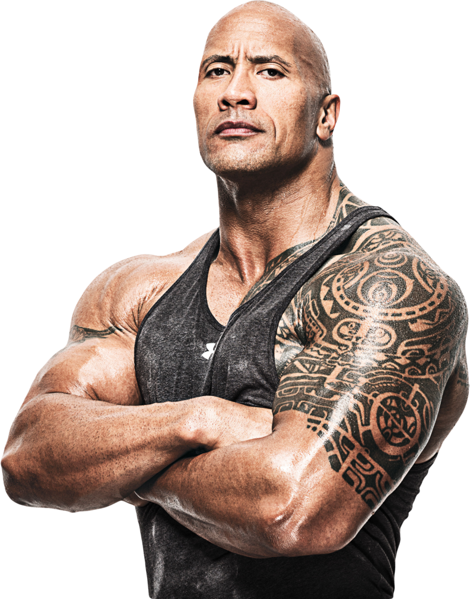

The bodybuilder physique is characterized by well-defined muscles, symmetry, and a low body fat percentage. This physique is achieved through intense weight training, a disciplined diet, and consistent commitment.
Bodybuilders focus on muscle hypertrophy, meaning they train to increase muscle size and definition. This involves high volume, moderate to heavy weights, and often a specific focus on symmetry and proportion.
A bodybuilder diet is high in protein to support muscle growth, with carefully measured carbohydrates and healthy fats. Here’s a sample breakdown:
This workout plan focuses on muscle growth, emphasizing different muscle groups each day. Here’s a sample weekly split:
| Day | Muscle Group | Example Exercises |
|---|---|---|
| Monday | Chest | Bench Press, Dumbbell Flyes, Push-Ups |
| Tuesday | Back | Pull-Ups, Barbell Rows, Deadlift |
| Wednesday | Legs | Squats, Lunges, Leg Press |
| Thursday | Shoulders | Shoulder Press, Lateral Raises, Face Pulls |
| Friday | Arms | Bicep Curls, Tricep Extensions, Hammer Curls |
| Saturday | Abs & Cardio | Crunches, Planks, 20 min cardio |